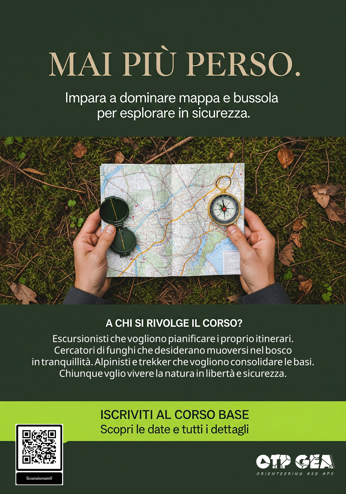

Corso Base di Orienteering
Impara a dominare mappa e bussola per esplorare in totale sicurezza.
Mai più perso. Trasforma ogni uscita in un'avventura.
Vuoi esplorare boschi e sentieri con la certezza di non perderti mai? Questo corso è pensato per escursionisti, runner, cercatori di funghi e amanti della natura. Ti daremo gli strumenti per interpretare una carta topografica, usare la bussola con sicurezza e scegliere sempre il percorso migliore.
Programma del Corso
- Lezione Online: Le Basi dell'Orientamento (Disponibile dal 18 Settembre su YouTube).
- Lezione 1: Scala Cartografica e Scelta del Percorso (Giovedì 25 Settembre, 17-19, Parco di Montecucco).
- Lezione 2: L'Uso della Bussola, la Tua Alleata (Giovedì 2 Ottobre, 17-19, Parco della Galleana).
- Lezione 3: Decifrare il Paesaggio con le Curve di Livello (Domenica 12 Ottobre, 10-12, Ceci le Vallette, Bobbio).
- Lezione 4: Prova Generale nel Bosco! (Domenica 26 Ottobre, 10-12, Parco Provinciale di Monte Moria).
- Evento Finale: Mettiti alla Prova! (Domenica 16 Novembre, Gare FISO a Viadana e Rivarolo).
Quota e Iscrizioni
Quota di iscrizione: 50,00 €
La quota comprende materiale didattico, iscrizione alla gara finale e tesseramento FISO 2025.
SCONTO GRUPPI: Se vi iscrivete in 3, una persona partecipa GRATIS!
La pre-iscrizione alla prima lezione (gratuita) è obbligatoria. Le iscrizioni al corso completo chiudono il 26 Settembre. I minori di 14 anni devono essere accompagnati.
Iscriviti Ora alla Lezione Gratuita!Per Informazioni
Email: ori.otpgea@gmail.com
Instagram: @ori.otpgea
Telefono/WhatsApp: 3356985712 (Marco) o 3333188069 (Riccardo)
Scarica il Bollettino Ufficiale
Tutti i dettagli del programma, costi e contatti in un unico file PDF.
 Scarica il PDF